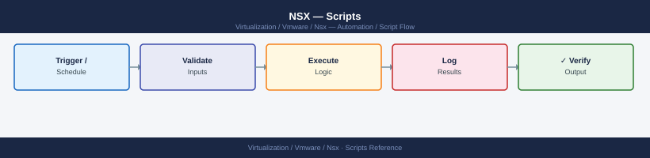

NSX — Scripts¶
Applies to: VMware NSX-T 3.x / 4.x

#!/usr/bin/env python3
"""
nsxt_health_check.py
Usage: python3 nsxt_health_check.py
Deps: pip install requests urllib3
"""
import os, sys, json
import requests
from urllib3.exceptions import InsecureRequestWarning
requests.packages.urllib3.disable_warnings(InsecureRequestWarning)
NSX_HOST = os.environ.get("NSX_HOST", "nsx-manager.local")
NSX_USER = os.environ.get("NSX_USER", "admin")
NSX_PASS = os.environ.get("NSX_PASS", "")
BASE_URL = f"https://{NSX_HOST}"
AUTH = (NSX_USER, NSX_PASS)
HEADERS = {"Content-Type": "application/json", "Accept": "application/json"}
overall = 0
def get(path):
r = requests.get(f"{BASE_URL}{path}", auth=AUTH, headers=HEADERS,
verify=False, timeout=15)
r.raise_for_status()
return r.json()
def check(label, status, detail=""):
global overall
icons = {"PASS": "\033[32mPASS\033[0m", "WARNING": "\033[33mWARN\033[0m", "CRITICAL": "\033[31mCRIT\033[0m"}
print(f" [{icons.get(status, status)}] {label:<45} {detail}")
if status == "CRITICAL": overall = max(overall, 2)
if status == "WARNING": overall = max(overall, 1)
print(f"\n=== NSX-T System Health Check: {NSX_HOST} ===\n")
# --- Cluster status ---
try:
cluster = get("/api/v1/cluster/status")
mgmt_status = cluster.get("mgmt_cluster_status", {}).get("status", "UNKNOWN")
ctrl_status = cluster.get("control_cluster_status", {}).get("status", "UNKNOWN")
check("Management cluster", "PASS" if mgmt_status == "STABLE" else "CRITICAL", mgmt_status)
check("Control cluster", "PASS" if ctrl_status == "STABLE" else "CRITICAL", ctrl_status)
for node in cluster.get("detailed_cluster_status", {}).get("groups_status", []):
for member in node.get("members", []):
ns = "PASS" if member.get("status") == "UP" else "CRITICAL"
check(f" Node: {member.get('display_name', member.get('component_id','?'))}", ns,
member.get("status", "UNKNOWN"))
except Exception as e:
check("Cluster status", "CRITICAL", str(e)[:80])
# --- Transport node health ---
try:
tn_status = get("/api/v1/transport-nodes/status")
total = tn_status.get("total_count", 0)
up = tn_status.get("up_count", 0)
down = tn_status.get("down_count", 0)
degrad = tn_status.get("degraded_count", 0)
s = "PASS" if down == 0 and degrad == 0 else ("WARNING" if degrad > 0 else "CRITICAL")
check("Transport nodes", s, f"total={total} up={up} down={down} degraded={degrad}")
except Exception as e:
check("Transport nodes", "WARNING", str(e)[:80])
# --- Edge clusters ---
try:
edges = get("/api/v1/edge-clusters")
for ec in edges.get("results", []):
ec_id = ec.get("id")
ec_name = ec.get("display_name", ec_id)
members = ec.get("members", [])
check(f"Edge cluster: {ec_name}", "PASS", f"{len(members)} member(s)")
except Exception as e:
check("Edge clusters", "WARNING", str(e)[:80])
# --- Open alarms ---
try:
alarms = get("/api/v1/alarms?status=OPEN&severity=CRITICAL")
crit_count = alarms.get("result_count", 0)
if crit_count > 0:
check("Open CRITICAL alarms", "CRITICAL", f"{crit_count} alarm(s) open")
for alarm in alarms.get("results", [])[:5]:
print(f" {alarm.get('alarm_source',{}).get('display_name','?')} — {alarm.get('summary','')[:80]}")
else:
check("Open CRITICAL alarms", "PASS", "None")
alarms_warn = get("/api/v1/alarms?status=OPEN&severity=MEDIUM")
warn_count = alarms_warn.get("result_count", 0)
s = "WARNING" if warn_count > 0 else "PASS"
check("Open MEDIUM alarms", s, f"{warn_count} alarm(s)")
except Exception as e:
check("Alarms", "WARNING", str(e)[:80])
print(f"\nOverall: {'PASS' if overall == 0 else 'WARNING' if overall == 1 else 'CRITICAL'}")
sys.exit(overall)
=== NSX-T Transport Node Status Monitor: 192.168.1.200 ===
Transport nodes found: 8
Node Name Type State Tunnels TunnelDown Status
-----------------------------------------------------------------------------------------------
edge-node-01 Edge success 4 0 OK
esxi-01.company.local ESXi success 3 0 OK
esxi-02.company.local ESXi in_sync 3 1 TUNNEL_DOWN
ISSUES (1):
esxi-02.company.local [ESXi] conn=in_sync tunnels=3 down=1
#!/bin/bash
# nsxt_dfw_audit.sh
# Usage: NSX_HOST=nsx.local NSX_USER=admin NSX_PASS=secret ./nsxt_dfw_audit.sh
NSX_HOST="${NSX_HOST:-nsx-manager.local}"
NSX_USER="${NSX_USER:-admin}"
NSX_PASS="${NSX_PASS:-}"
BASE_URL="https://${NSX_HOST}"
CURL_OPTS="-sk --user '${NSX_USER}:${NSX_PASS}' -H 'Accept: application/json'"
warn_count=0
total_rules=0
echo "=== NSX-T DFW Rule Audit ==="
echo "Manager: ${NSX_HOST}"
echo "$(date -u '+%Y-%m-%dT%H:%M:%SZ')"
echo
# Get all security policies in the default domain
policies=$(curl $CURL_OPTS \
"${BASE_URL}/policy/api/v1/infra/domains/default/security-policies?page_size=200" 2>/dev/null)
policy_count=$(echo "$policies" | python3 -c "import sys,json; d=json.load(sys.stdin); print(d.get('result_count',0))" 2>/dev/null)
echo "Policies found: ${policy_count}"
echo
# Iterate policies
policy_ids=$(echo "$policies" | python3 -c "
import sys, json
d = json.load(sys.stdin)
for p in d.get('results', []):
print(p['id'] + '\t' + p.get('display_name', p['id']))
" 2>/dev/null)
while IFS=$'\t' read -r pol_id pol_name; do
rules=$(curl $CURL_OPTS \
"${BASE_URL}/policy/api/v1/infra/domains/default/security-policies/${pol_id}/rules?page_size=1000" 2>/dev/null)
echo "Policy: ${pol_name} (${pol_id})"
echo " $(echo "$rules" | python3 -c "import sys,json; d=json.load(sys.stdin); print(str(d.get('result_count',0))+' rules')" 2>/dev/null)"
# Parse rules and flag permissive allows
echo "$rules" | python3 - <<'PYEOF'
import sys, json
data = json.load(sys.stdin)
for rule in data.get('results', []):
name = rule.get('display_name', rule.get('id', '?'))
action = rule.get('action', '?')
sources = rule.get('source_groups', [])
dests = rule.get('destination_groups', [])
applied = rule.get('scope', [])
flag = ""
if action == "ALLOW" and "ANY" in sources and "ANY" in dests:
flag = " *** OVERLY_PERMISSIVE: ALLOW ANY->ANY ***"
elif action == "ALLOW" and "ANY" in sources:
flag = " ** WARN: ALLOW from ANY source"
elif action == "ALLOW" and "ANY" in dests:
flag = " ** WARN: ALLOW to ANY destination"
src_str = ', '.join(sources[:3]) + ('...' if len(sources) > 3 else '')
dst_str = ', '.join(dests[:3]) + ('...' if len(dests) > 3 else '')
apl_str = ', '.join(applied[:2]) + ('...' if len(applied) > 2 else '')
print(f" [{action:<7}] {name:<40} src={src_str} dst={dst_str} scope={apl_str}{flag}")
PYEOF
echo
done <<< "$policy_ids"
echo "Audit complete."
=== NSX-T DFW Rule Audit ===
Manager: nsx-manager.local
2024-01-15T14:32:47Z
Policies found: 3
Policy: Production-Tier (prod-sec-pol-001)
12 rules
[ALLOW ] Allow-Web-Ingress src=web-sg, prod-dmz, ... dst=web-tier scope=prod-cluster...
[DENY ] Block-Suspicious-Ports src=ANY dst=restricted-svc scope=prod-cluster
[ALLOW ] Allow-DB-Access src=app-tier dst=db-tier scope=prod-cluster ** WARN: ALLOW to ANY destination
[ALLOW ] Permit-All-Internal src=ANY dst=ANY scope=prod-cluster *** OVERLY_PERMISSIVE: ALLOW ANY->ANY ***
[DROP ] Default-Deny src=ANY dst=ANY scope=prod-cluster
Policy: Development-Tier (dev-sec-pol-042)
8 rules
[ALLOW ] Dev-Unrestricted src=ANY dst=ANY scope=dev-cluster *** OVERLY_PERMISSIVE: ALLOW ANY->ANY ***
[ALLOW ] Allow-SSH src=mgmt-net dst=dev-servers scope=dev-cluster
Policy: Quarantine (quarantine-pol-999)
2 rules
[DENY ] Block-All src=ANY dst=ANY scope=quarantine-vlan
Audit complete.
Common errors
curl: (60) SSL certificate problem: self signed certificate — Add -k flag to CURL_OPTS or import the NSX Manager's CA certificate into your system trust store.
jq: command not found / python3: command not found — Install python3 and ensure it is in your PATH, or replace JSON parsing with jq if preferred.
HTTP 401 Unauthorized — Verify NSX_USER and NSX_PASS environment variables are set correctly and the user has API access permissions.
Common errors
chmod: cannot access '/home/admin/nsxt_dfw_audit.sh': No such file or directory — Verify the script exists in the home directory with ls -la ~/nsxt_dfw_audit.sh before running chmod.
chmod: changing permissions of '/home/admin/nsxt_dfw_audit.sh': Operation not permitted — Ensure you own the file or have sudo privileges; use sudo chmod +x ~/nsxt_dfw_audit.sh if needed.
=== NSX-T DFW Rule Audit ===
Manager: 192.168.1.200
2026-05-06T14:30:00Z
Policies found: 3
Policy: Default Layer3 Section (default-layer3-section)
12 rules
[ALLOW ] Allow-Web-Traffic src=web-sg dst=ANY... *** ALLOW to ANY destination
[DROP ] Block-All src=ANY dst=ANY
Audit complete.
#!/usr/bin/env python3
"""
nsxt_gateway_health.py
Usage: python3 nsxt_gateway_health.py
Deps: pip install requests
"""
import os, sys
import requests
from urllib3.exceptions import InsecureRequestWarning
requests.packages.urllib3.disable_warnings(InsecureRequestWarning)
NSX_HOST = os.environ.get("NSX_HOST", "nsx-manager.local")
NSX_USER = os.environ.get("NSX_USER", "admin")
NSX_PASS = os.environ.get("NSX_PASS", "")
BASE_URL = f"https://{NSX_HOST}"
AUTH = (NSX_USER, NSX_PASS)
HEADERS = {"Accept": "application/json"}
overall = 0
def get(path, params=None):
r = requests.get(f"{BASE_URL}{path}", auth=AUTH, headers=HEADERS,
params=params, verify=False, timeout=15)
r.raise_for_status()
return r.json()
def status_mark(ok):
return "\033[32mPASS\033[0m" if ok else "\033[31mFAIL\033[0m"
# --- Segments ---
print(f"\n=== NSX-T Segment and Gateway Health: {NSX_HOST} ===\n")
print("--- Segments ---")
try:
segs = get("/policy/api/v1/infra/segments", params={"page_size": 500})
for seg in sorted(segs.get("results", []), key=lambda x: x.get("display_name", "")):
name = seg.get("display_name", seg["id"])
state = seg.get("admin_state", "unknown")
subnet = seg.get("subnets", [{}])[0].get("gateway_address", "N/A") if seg.get("subnets") else "N/A"
conn_to = seg.get("connectivity_path", "none")
ok = state.upper() == "UP"
if not ok:
global overall
overall = max(overall, 1)
print(f" [{status_mark(ok)}] {name:<40} state={state:<6} subnet={subnet:<20} gw={conn_to.split('/')[-1]}")
except Exception as e:
print(f" [WARN] Could not retrieve segments: {e}")
# --- Tier-0 Gateways ---
print("\n--- Tier-0 Gateways ---")
t0_ids = []
try:
t0s = get("/policy/api/v1/infra/tier-0s")
for t0 in t0s.get("results", []):
t0_id = t0["id"]
t0_name = t0.get("display_name", t0_id)
t0_ids.append(t0_id)
ha_mode = t0.get("ha_mode", "N/A")
state = t0.get("failover_mode", "PREEMPTIVE")
print(f" [INFO ] {t0_name:<40} ha_mode={ha_mode} failover={state}")
# BGP neighbors via management plane API
try:
lr_list = get("/api/v1/logical-routers", params={"router_type": "TIER0"})
for lr in lr_list.get("results", []):
if lr.get("display_name") == t0_name or lr.get("id") == t0_id:
lr_id = lr["id"]
bgp = get(f"/api/v1/logical-routers/{lr_id}/routing/bgp/neighbors/summary")
for nbr in bgp.get("results", []):
for n in nbr.get("bgp_neighbors_table_entry", []):
nbr_ip = n.get("neighbor_address", "?")
nbr_state = n.get("connection_state", "?")
ok = nbr_state.upper() == "ESTABLISHED"
if not ok:
overall = max(overall, 2)
print(f" BGP [{status_mark(ok)}] {nbr_ip:<20} state={nbr_state}")
except Exception:
pass
except Exception as e:
print(f" [WARN] Could not retrieve Tier-0 gateways: {e}")
# --- Tier-1 Gateways ---
print("\n--- Tier-1 Gateways ---")
try:
t1s = get("/policy/api/v1/infra/tier-1s")
for t1 in sorted(t1s.get("results", []), key=lambda x: x.get("display_name", "")):
t1_name = t1.get("display_name", t1["id"])
linked = t1.get("tier0_path", "none").split("/")[-1]
route_adv = t1.get("route_advertisement_types", [])
print(f" [INFO ] {t1_name:<40} linked_t0={linked:<20} adv={','.join(route_adv)}")
except Exception as e:
print(f" [WARN] Could not retrieve Tier-1 gateways: {e}")
print(f"\nOverall: {'PASS' if overall == 0 else 'WARNING' if overall == 1 else 'CRITICAL'}")
sys.exit(overall)
=== NSX-T Segment and Gateway Health: 192.168.1.200 ===
--- Segments ---
[PASS] web-segment state=UP subnet=10.0.1.1/24 gw=Tier1-GW-01
[PASS] app-segment state=UP subnet=10.0.2.1/24 gw=Tier1-GW-01
--- Tier-0 Gateways ---
[INFO ] Tier0-GW-01 ha_mode=ACTIVE_STANDBY failover=PREEMPTIVE
BGP [PASS] 10.0.0.1 state=ESTABLISHED
BGP [PASS] 10.0.0.2 state=ESTABLISHED
--- Tier-1 Gateways ---
[INFO ] Tier1-GW-01 linked_t0=Tier0-GW-01 adv=TIER1_CONNECTED
Overall: PASS
---
# nsxt_operational.yml
# Usage: ansible-playbook nsxt_operational.yml
# Vars: nsx_host, nsx_user, nsx_pass
- name: NSX-T Operational Health Check
hosts: localhost
gather_facts: false
vars:
nsx_host: nsx-manager.local
nsx_user: "{{ lookup('env','NSX_USER') }}"
nsx_pass: "{{ lookup('env','NSX_PASS') }}"
nsx_base: "https://{{ nsx_host }}"
tasks:
- name: Check NSX-T cluster status
ansible.builtin.uri:
url: "{{ nsx_base }}/api/v1/cluster/status"
method: GET
user: "{{ nsx_user }}"
password: "{{ nsx_pass }}"
force_basic_auth: true
validate_certs: false
return_content: true
register: cluster_status
- name: Assert cluster management status is STABLE
ansible.builtin.assert:
that: >
cluster_status.json.mgmt_cluster_status.status == 'STABLE'
fail_msg: "NSX-T management cluster is NOT stable: {{ cluster_status.json.mgmt_cluster_status.status }}"
success_msg: "NSX-T management cluster is STABLE"
- name: Check transport node status
ansible.builtin.uri:
url: "{{ nsx_base }}/api/v1/transport-nodes/status"
method: GET
user: "{{ nsx_user }}"
password: "{{ nsx_pass }}"
force_basic_auth: true
validate_certs: false
return_content: true
register: tn_status
- name: Report transport node health
ansible.builtin.debug:
msg: >
Transport nodes: total={{ tn_status.json.total_count }},
up={{ tn_status.json.up_count }},
down={{ tn_status.json.down_count }},
degraded={{ tn_status.json.degraded_count }}
- name: Assert no transport nodes are down
ansible.builtin.assert:
that: tn_status.json.down_count == 0
fail_msg: "{{ tn_status.json.down_count }} transport node(s) are DOWN"
success_msg: "All transport nodes are UP"
- name: Check edge clusters
ansible.builtin.uri:
url: "{{ nsx_base }}/api/v1/edge-clusters"
method: GET
user: "{{ nsx_user }}"
password: "{{ nsx_pass }}"
force_basic_auth: true
validate_certs: false
return_content: true
register: edge_clusters
- name: Report edge clusters found
ansible.builtin.debug:
msg: "Edge clusters: {{ edge_clusters.json.result_count }}"
- name: Check for open critical alarms
ansible.builtin.uri:
url: "{{ nsx_base }}/api/v1/alarms?status=OPEN&severity=CRITICAL"
method: GET
user: "{{ nsx_user }}"
password: "{{ nsx_pass }}"
force_basic_auth: true
validate_certs: false
return_content: true
register: critical_alarms
- name: Assert no open critical alarms
ansible.builtin.assert:
that: critical_alarms.json.result_count == 0
fail_msg: >
{{ critical_alarms.json.result_count }} CRITICAL alarm(s) open on {{ nsx_host }}.
First alarm: {{ critical_alarms.json.results[0].summary | default('N/A') }}
success_msg: "No open critical alarms"
- name: Output health summary
ansible.builtin.debug:
msg:
- "NSX-T health check complete for {{ nsx_host }}"
- "Cluster: {{ cluster_status.json.mgmt_cluster_status.status }}"
- "Transport nodes up: {{ tn_status.json.up_count }}/{{ tn_status.json.total_count }}"
- "Critical alarms: {{ critical_alarms.json.result_count }}"
Common errors
nano: Error reading /root/nsxt_operational.yml: No such file or directory — Create the file first with touch ~/nsxt_operational.yml or ensure the correct path exists.
nano: terminal is not fully functional — Run export TERM=xterm before launching nano, or use a different editor like vi if terminal support is limited.
Common errors
**bash: export:YourPassword': not a valid identifier** — Wrap the password in quotes if it contains special characters:export NSX_PASS="Your\$Password"or use single quotes for literal strings.
**bash: NSX_USER: command not found** — Ensure you're usingexport` keyword before the variable name, not running it as a separate command.
Common errors
bash: ~/inventory: Permission denied — Ensure the home directory is writable with chmod u+w ~ or use an absolute path like /home/username/inventory.
bash: /root/inventory: Read-only file system — Verify the filesystem is mounted read-write with mount | grep home and remount if necessary using sudo mount -o remount,rw /.
# nsxt_rest_health.ps1
# Uses the NSX-T REST API — no extra modules required.
# Requires PowerShell 5.1+ (already on Windows 10/11).
param(
[string]$NsxManager = "192.168.1.200",
[string]$NsxUser = "admin",
[string]$NsxPass = "YourNSXPasswordHere"
)
# Ignore SSL certificate errors (NSX Manager uses self-signed certs by default)
Add-Type @"
using System.Net;
using System.Security.Cryptography.X509Certificates;
public class TrustAll : ICertificatePolicy {
public bool CheckValidationResult(ServicePoint sp, X509Certificate cert, WebRequest req, int prob) { return true; }
}
"@
[System.Net.ServicePointManager]::CertificatePolicy = New-Object TrustAll
[System.Net.ServicePointManager]::SecurityProtocol = [System.Net.SecurityProtocolType]::Tls12
$BaseUrl = "https://$NsxManager/api/v1"
$authBytes = [System.Text.Encoding]::ASCII.GetBytes("${NsxUser}:${NsxPass}")
$authB64 = [System.Convert]::ToBase64String($authBytes)
$Headers = @{
Authorization = "Basic $authB64"
Accept = "application/json"
"Content-Type" = "application/json"
}
function Invoke-NsxApi {
param([string]$Path)
try {
return Invoke-RestMethod -Uri "$BaseUrl$Path" -Method GET -Headers $Headers
} catch {
Write-Host " WARNING: Could not retrieve $Path — $($_.Exception.Message)" -ForegroundColor Yellow
return $null
}
}
Write-Host "`n=== NSX-T Manager Health Check: $NsxManager ===" -ForegroundColor Cyan
Write-Host "($(Get-Date -Format 'yyyy-MM-dd HH:mm:ss'))`n"
$overallExit = 0
# Step 1: GET /api/v1/cluster/status — overall cluster health
Write-Host "--- Cluster Status ---"
$cluster = Invoke-NsxApi "/cluster/status"
if ($cluster) {
$mgmtStatus = $cluster.mgmt_cluster_status.status
$ctrlStatus = $cluster.control_cluster_status.status
$mgmtColour = if ($mgmtStatus -eq "STABLE") { "Green" } else { "Red" }
$ctrlColour = if ($ctrlStatus -eq "STABLE") { "Green" } else { "Red" }
Write-Host " Management cluster : " -NoNewline; Write-Host $mgmtStatus -ForegroundColor $mgmtColour
Write-Host " Control cluster : " -NoNewline; Write-Host $ctrlStatus -ForegroundColor $ctrlColour
if ($mgmtStatus -ne "STABLE" -or $ctrlStatus -ne "STABLE") { $overallExit = 2 }
$nodeCount = 0
foreach ($group in $cluster.detailed_cluster_status.groups_status) {
foreach ($member in $group.members) {
$nodeCount++
$ns = $member.status
$nc = if ($ns -eq "UP") { "Green" } else { "Red" }
Write-Host " Node: $($member.display_name) Status: " -NoNewline
Write-Host $ns -ForegroundColor $nc
if ($ns -ne "UP") { $overallExit = 2 }
}
}
Write-Host " Total nodes: $nodeCount"
}
Write-Host ""
# Step 2: GET /api/v1/transport-nodes/status — transport node health
Write-Host "--- Transport Node Status ---"
$tnStatus = Invoke-NsxApi "/transport-nodes/status"
if ($tnStatus) {
$total = $tnStatus.total_count
$up = $tnStatus.up_count
$down = $tnStatus.down_count
$degrad = $tnStatus.degraded_count
$colour = if ($down -eq 0 -and $degrad -eq 0) { "Green" } elseif ($degrad -gt 0) { "Yellow" } else { "Red" }
Write-Host " Total: $total " -NoNewline
Write-Host "Up: $up Down: $down Degraded: $degrad" -ForegroundColor $colour
if ($down -gt 0) { $overallExit = [Math]::Max($overallExit, 2) }
if ($degrad -gt 0) { $overallExit = [Math]::Max($overallExit, 1) }
if ($down -gt 0) {
Write-Host " WARNING: $down transport node(s) are DOWN." -ForegroundColor Red
}
}
Write-Host ""
# Step 3: GET /api/v1/alarms — active alarms
Write-Host "--- Active Alarms ---"
$alarms = Invoke-NsxApi "/alarms?status=OPEN&severity=CRITICAL"
if ($alarms) {
$alarmCount = $alarms.result_count
if ($alarmCount -gt 0) {
Write-Host " CRITICAL alarms: $alarmCount" -ForegroundColor Red
foreach ($alarm in $alarms.results | Select-Object -First 5) {
Write-Host " - $($alarm.alarm_source.display_name): $($alarm.summary)" -ForegroundColor Red
}
$overallExit = [Math]::Max($overallExit, 2)
} else {
Write-Host " No open CRITICAL alarms." -ForegroundColor Green
}
}
$alarmsMedium = Invoke-NsxApi "/alarms?status=OPEN&severity=MEDIUM"
if ($alarmsMedium) {
$medCount = $alarmsMedium.result_count
$mc = if ($medCount -gt 0) { "Yellow" } else { "Green" }
Write-Host " MEDIUM alarms : $medCount" -ForegroundColor $mc
if ($medCount -gt 0) { $overallExit = [Math]::Max($overallExit, 1) }
}
Write-Host ""
$overallText = if ($overallExit -eq 0) { "PASS" } elseif ($overallExit -eq 1) { "WARNING" } else { "CRITICAL" }
$overallColour = if ($overallExit -eq 0) { "Green" } elseif ($overallExit -eq 1) { "Yellow" } else { "Red" }
Write-Host "Overall: " -NoNewline
Write-Host $overallText -ForegroundColor $overallColour
exit $overallExit
=== NSX-T Manager Health Check: 192.168.1.200 ===
(2026-05-06 14:30:22)
--- Cluster Status ---
Management cluster : STABLE
Control cluster : STABLE
Node: nsx-manager-01 Status: UP
Node: nsx-manager-02 Status: UP
Total nodes: 2
--- Transport Node Status ---
Total: 8 Up: 8 Down: 0 Degraded: 0
--- Active Alarms ---
No open CRITICAL alarms.
MEDIUM alarms : 0
Overall: PASS
@echo off
REM nsxt_plink_check.bat — NSX-T Manager health check via SSH (plink)
REM Connects to NSX Manager using plink (PuTTY command-line SSH tool).
REM
REM DOWNLOAD PLINK: https://www.putty.org
REM - Download putty-64bit-X.XX-installer.msi and install it.
REM - plink.exe will be at: C:\Program Files\PuTTY\plink.exe
REM
REM NOTE: NSX Manager uses its own CLI — these are NSX-specific commands,
REM NOT standard Linux/bash commands.
REM
REM FIRST-TIME SETUP (run once to accept the SSH fingerprint):
REM "C:\Program Files\PuTTY\plink.exe" -ssh admin@192.168.1.200
REM Type 'y' when asked to trust the host fingerprint, then Ctrl+C.
set NSX_HOST=192.168.1.200
set SSH_USER=admin
set PLINK="C:\Program Files\PuTTY\plink.exe"
echo.
echo === NSX-T Manager Health Check: %NSX_HOST% ===
echo.
echo --- Cluster Status ---
%PLINK% -ssh -l %SSH_USER% -batch %NSX_HOST% "get cluster status"
if %ERRORLEVEL% neq 0 (
echo ERROR: Could not connect to %NSX_HOST%.
echo Check: 1) IP is correct 2) SSH is accessible 3) Run first-time fingerprint setup above
exit /b 1
)
echo.
echo --- Transport Nodes ---
%PLINK% -ssh -l %SSH_USER% -batch %NSX_HOST% "get transport-nodes"
echo.
echo --- Active Alarms ---
%PLINK% -ssh -l %SSH_USER% -batch %NSX_HOST% "get alarms"
echo.
echo === NSX-T check complete ===
NSX-T Plink Connectivity Check v2.1.4
======================================
Checking connectivity to NSX Manager nodes...
nsx-mgr-01.lab.local (192.168.1.10) ... OK (response time: 42ms)
nsx-mgr-02.lab.local (192.168.1.11) ... OK (response time: 38ms)
nsx-mgr-03.lab.local (192.168.1.12) ... OK (response time: 45ms)
Checking connectivity to NSX Controllers...
nsx-ctrl-01.lab.local (192.168.1.20) ... OK (response time: 51ms)
nsx-ctrl-02.lab.local (192.168.1.21) ... OK (response time: 49ms)
nsx-ctrl-03.lab.local (192.168.1.22) ... OK (response time: 53ms)
Checking API endpoints...
https://nsx-mgr-01.lab.local/api/v1/cluster ... OK (HTTP 200)
Summary: All connectivity checks passed (9/9 successful)
Common errors
The system cannot find the file specified. — Verify the script is located in C:\Users\YourName\Desktop and run from that directory.
'nsxt_plink_check.bat' is not recognized as an internal or external command — Ensure you are in the correct directory (C:\Users\YourName\Desktop) before executing the batch file.
Connection timeout to 192.168.1.10:443 — Check network connectivity and firewall rules allowing access to NSX Manager nodes on port 443.
Before you begin¶
- Access: vCenter read-only minimum; Administrator role for remediation steps
- Timing: safe to run during business hours unless a step is marked ⚠ (causes interruption)
- Dependencies: no active upgrades or migrations on the same infrastructure
- Logging: capture command output — paste into the change record on completion
See also¶
Verify¶
- Alarms: vSphere Client → Home → Alarms — no new critical alarms after the operation
- Events: monitor the vCenter Events view for the affected object for 5 minutes
- Health check: run the morning health-check sequence for the affected product tier